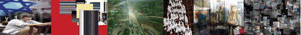

|
| |
| curated by Annette Weintraub | |
|  | |
Gregory
Chatonsky |
The
revolution took place in New York |
|
Urbanisms is a selection of projects
that remap and revisualize the city through the processing and reinterpretation
of diverse streams of information: sound, captured visual images and texts.
The projects in this exhibition reflect the dynamic diversities of urban
patterning and permit us to perceive the city in different ways: through
surprising juxtapositions of sounds, in the minute physical gestures of
its inhabitants, in a changing collision of passers-by and their environment,
in the accumulations of data flowing from online to physical space, and
in the mechanisms of surveillance and control that provide a constant
stream of visuals as byproduct. Exhibition April 12-June 10, 2005 |
|
|
Copyright © 2005 |
|